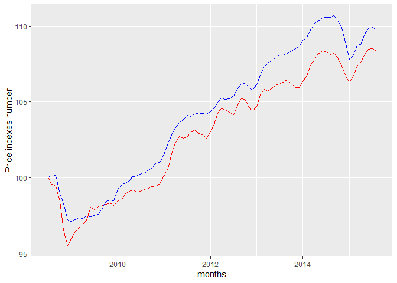
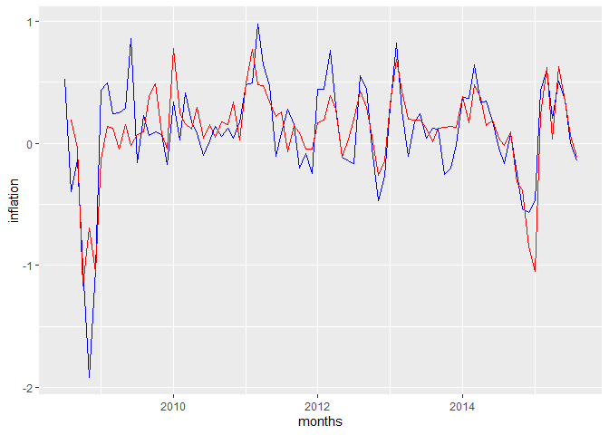

This package is a package combining the Price Index based on web scrapping information created in the paper “The Billion Prices Project: Using Online Data for Measurement and Research” – Journal of Economic Perspectives,31(1) with the official consumer price index released by US government.
The PriceStats (PS) index is released online in csv form for scholars to replicate this research via Harvard/MIT Dataverse:
https://dataverse.harvard.edu/file.xhtml?persistentId=doi:10.7910/DVN/6RQCRS/KGU8B0&version=2.0
The official CPI data can be accessed through Bureau of labor statistics and the documentation for this API is as follows:
https://www.bls.gov/developers/api_signature_v2.htm
It contains 2 datasets:
US_price_indexes: It contains Daily price indexes in US from 2008.07-2015.08 from the sources above.
US_price_month: It contains monthly price indexes in US from 2008.07-2015.08 from the sources above.This is a basic demonstration of the dataset:
Here are the basic demostration of the datasets:
head(US_price_indexes)
#> year month date indexPS monthlyPS annualPS day CPI inflation_CPI
#> 63 2008 Jul 01-Jul-08 100.00000 NA NA 01 100 0.5251011
#> 64 2008 Jul 02-Jul-08 99.88679 NA NA 02 100 0.5251011
#> 65 2008 Jul 03-Jul-08 99.86652 NA NA 03 100 0.5251011
#> 66 2008 Jul 04-Jul-08 99.84514 NA NA 04 100 0.5251011
#> 67 2008 Jul 05-Jul-08 99.89278 NA NA 05 100 0.5251011
#> 68 2008 Jul 06-Jul-08 99.91041 NA NA 06 100 0.5251011
head(US_price_month)
#> year period month PS_month CPI inflation_CPI inflation_PS mdate
#> 1 2008 M07 Jul 100.00080 100.00000 0.5251011 NA 2008-07-01
#> 2 2008 M08 Aug 100.18985 99.60084 -0.3991562 0.18905320 2008-08-01
#> 3 2008 M09 Sep 100.15130 99.46309 -0.1383019 -0.03848464 2008-09-01
#> 4 2008 M10 Oct 98.98386 98.45838 -1.0101333 -1.16567630 2008-10-01
#> 5 2008 M11 Nov 98.29480 96.57262 -1.9152895 -0.69612623 2008-11-01
#> 6 2008 M12 Dec 97.25257 95.57382 -1.0342474 -1.06031229 2008-12-01library(ggplot2)
ggplot() +
geom_line(data = US_price_month, aes(x = mdate, y = PS_month), color = "blue") +
geom_line(data = US_price_month, aes(x = mdate, y = CPI), color = "red") +
xlab('months') +
ylab('Price indexes number') This graph compares the online price index with the official CPI. This graph shows that online price index is relatively higher than official CPI.
library(ggplot2)
ggplot() +
geom_line(data = US_price_month, aes(x = mdate, y = inflation_CPI), color = "blue") +
geom_line(data = US_price_month, aes(x = mdate, y = inflation_PS), color = "red") +
xlab('months') +
ylab('inflation')
#> Warning: Removed 1 rows containing missing values (geom_path). This graph shows that online price index is quite close to official CPI.